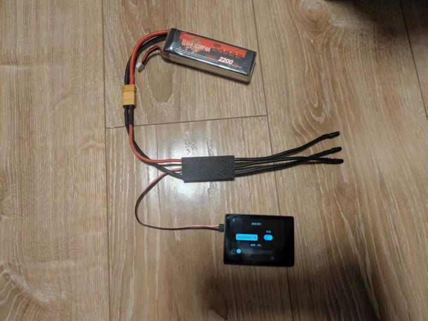
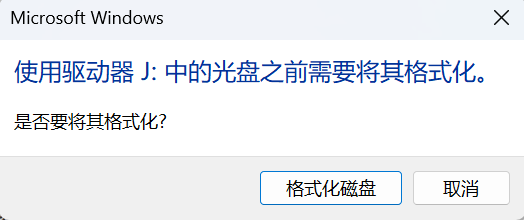
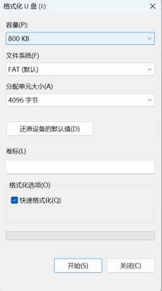

CHAPTER 01
产品概述
本产品是一款用于 电调参数配置、固件升级及调速测试 的调参设备。
目前支持 AM32 固件 的无刷电调。
CHAPTER 02
包装清单
ESC Master 调参器1 台
CHAPTER 03
连接方式
ESC Master 采用 USB 供电或 BEC 供电二选一均可。
下图为典型的 BEC 供电方式。

CHAPTER 04
调参配置
在主界面点击“配置”即可进入调参界面。保证 SIG 连上电调后，点击“读取”按键，读取电调的基础信息与各项参数。
点击屏幕左右箭头，可切换参数项目。
保存将当前配置参数保存至电调。
默认设置将默认参数保存至电调。
CHAPTER 05
速度控制
在主界面点击“速度控制”按键，可进入速度控制功能。
在“速度控制”界面内，用户可以进行电调调速测试，可选 PWM、DSHOT150、DSHOT300、DSHOT600 几种信号输出类型。
CHAPTER 06
电调固件升级
在主界面点击“固件”按键，可进入固件升级功能。
在“固件升级”界面内，用户可以给电调进行固件升级。升级固件之前，需要先选择固件文件。
固件文件可以通过 USB 传入 ESC Master。ESC Master 插入电脑时会模拟成 U 盘。
CHAPTER 07
系统菜单
在主界面点击“系统”按键，可进入系统菜单。
在“系统菜单”内，用户可以设置控件颜色、LCD 亮度、恢复出厂设置、选择语言、查看关于信息。


CHAPTER 08
ESC Master 固件升级
ESC Master 自身的固件也可以升级。固件文件可在卖家提供的网盘地址下载，名称为 update.bin。
通过 USB 将 update.bin 传入 ESC Master 后，设备会验证固件，验证成功后自动升级。固件版本可在系统菜单“关于”的“软件版本”查看。